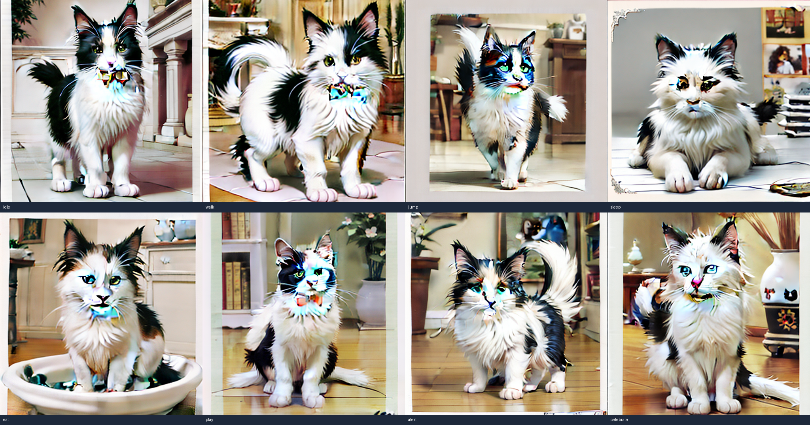
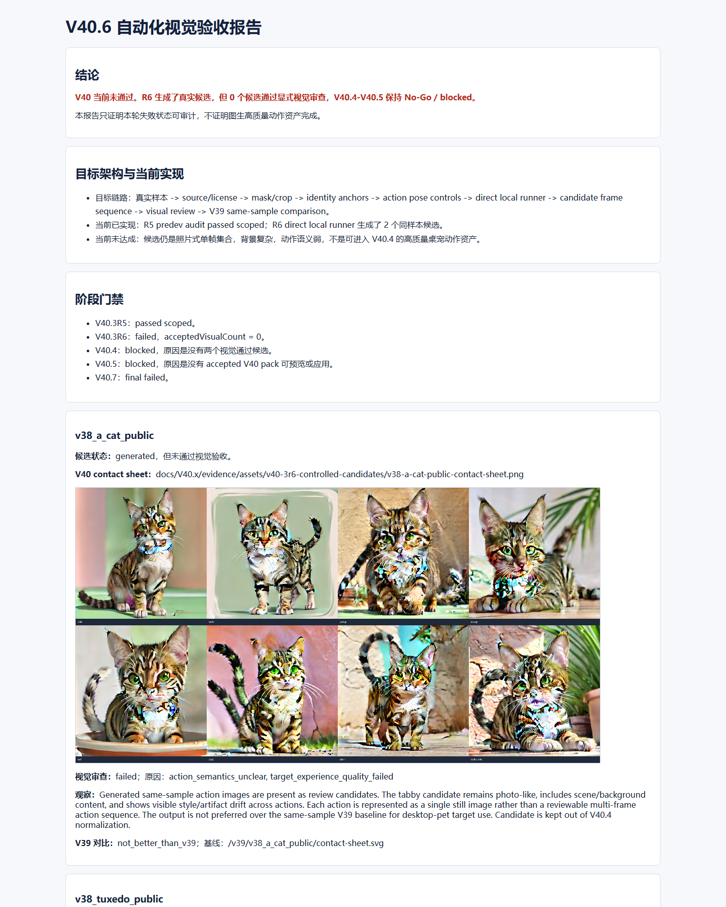
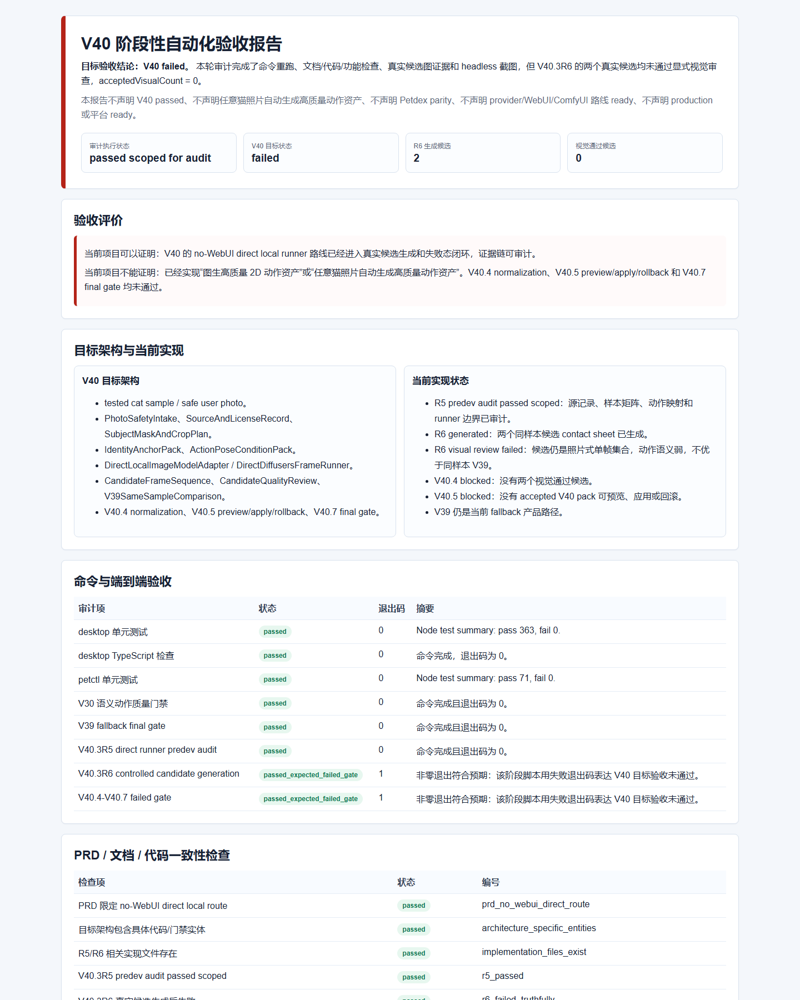

R6 acceptedVisualCount = 0，V40.4/V40.5 blocked，V40.7 failed。
V40 阶段性自动化验收报告
目标验收结论：V40 failed。 本轮审计完成了命令重跑、文档/代码/功能检查、真实候选图证据和 headless 截图，但 V40.3R6 的两个真实候选均未通过显式视觉审查，acceptedVisualCount = 0。
本报告不声明 V40 passed、不声明任意猫照片自动生成高质量动作资产、不声明 Petdex parity、不声明 provider/WebUI/ComfyUI 路线 ready、不声明 production 或平台 ready。
审计执行状态passed scoped for audit
V40 目标状态failed
R6 生成候选2
视觉通过候选0
验收评价
当前项目可以证明：V40 的 no-WebUI direct local runner 路线已经进入真实候选生成和失败态闭环，证据链可审计。
当前项目不能证明：已经实现“图生高质量 2D 动作资产”或“任意猫照片自动生成高质量动作资产”。V40.4 normalization、V40.5 preview/apply/rollback 和 V40.7 final gate 均未通过。
目标架构与当前实现
V40 目标架构
- tested cat sample / safe user photo。
- PhotoSafetyIntake、SourceAndLicenseRecord、SubjectMaskAndCropPlan。
- IdentityAnchorPack、ActionPoseConditionPack。
- DirectLocalImageModelAdapter / DirectDiffusersFrameRunner。
- CandidateFrameSequence、CandidateQualityReview、V39SameSampleComparison。
- V40.4 normalization、V40.5 preview/apply/rollback、V40.7 final gate。
当前实现状态
- R5 predev audit passed scoped：源记录、样本矩阵、动作映射和 runner 边界已审计。
- R6 generated：两个同样本候选 contact sheet 已生成。
- R6 visual review failed：候选仍是照片式单帧集合，动作语义弱，不优于同样本 V39。
- V40.4 blocked：没有两个视觉通过候选。
- V40.5 blocked：没有 accepted V40 pack 可预览、应用或回滚。
- V39 仍是当前 fallback 产品路径。
命令与端到端验收
| 审计项 | 状态 | 退出码 | 摘要 |
|---|---|---|---|
| desktop 单元测试 | passed | 0 | Node test summary: pass 363, fail 0. |
| desktop TypeScript 检查 | passed | 0 | 命令完成，退出码为 0。 |
| petctl 单元测试 | passed | 0 | Node test summary: pass 71, fail 0. |
| V30 语义动作质量门禁 | passed | 0 | 命令完成且退出码为 0。 |
| V39 fallback final gate | passed | 0 | 命令完成且退出码为 0。 |
| V40.3R5 direct runner predev audit | passed | 0 | 命令完成且退出码为 0。 |
| V40.3R6 controlled candidate generation | passed_expected_failed_gate | 1 | 非零退出符合预期：该阶段脚本用失败退出码表达 V40 目标验收未通过。 |
| V40.4-V40.7 failed gate | passed_expected_failed_gate | 1 | 非零退出符合预期：该阶段脚本用失败退出码表达 V40 目标验收未通过。 |
PRD / 文档 / 代码一致性检查
| 检查项 | 状态 | 编号 |
|---|---|---|
| PRD 限定 no-WebUI direct local route | passed | prd_no_webui_direct_route |
| 目标架构包含具体代码/门禁实体 | passed | architecture_specific_entities |
| R5/R6 相关实现文件存在 | passed | implementation_files_exist |
| V40.3R5 predev audit passed scoped | passed | r5_passed |
| V40.3R6 真实候选生成后失败 | passed | r6_failed_truthfully |
| V40.7 final gate 保持 failed | passed | final_gate_failed |
| V40.4/V40.5 未被错误解锁 | passed | no_product_unlock |
功能覆盖矩阵
| PRD 功能点 | 当前覆盖 | 证据 |
|---|---|---|
| 至少两个 tested cat samples 和一个 negative/blocked sample | covered | R5 sample matrix / R6 generatedCount |
| 真实候选生成 | covered_failed_quality | R6 manifest and contact sheets |
| 显式视觉审查 | covered_failed_quality | R6 visualReviews |
| V40.4 normalization | blocked | acceptedVisualCount = 0 |
| V40.5 preview/apply/rollback | blocked | no accepted V40 pack |
| V40 final scoped quality claim | failed | V40.7 final gate |
截图与视觉证据
自动化截图使用 Chrome headless 本地文件模式采集；未启动桌面宠物 GUI，未打开可见浏览器窗口，截图后删除临时浏览器 profile。




代码审计发现
R6 visual review states single still images and weak action semantics.
V40.5 blocked because no accepted V40 pack exists.
Claim / Security Scan
| 扫描项 | 状态 | 命中 |
|---|---|---|
| Claim scan | passed | none |
| Security scan | passed | none |
最终结论
阶段性审计可以通过：证据完整、失败态诚实、没有扩大声明。
V40 产品目标没有通过：当前不能进入“图生高质量动作资产已完成”的人工详细体验审查；只能审查流程、证据链和失败原因。